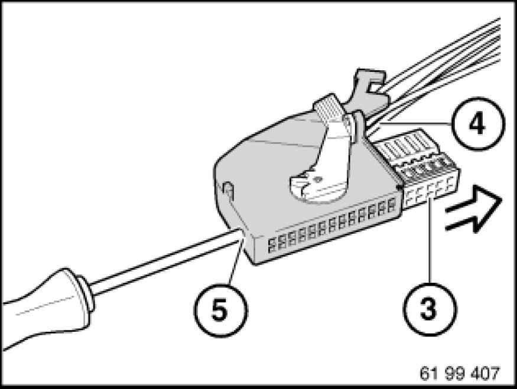

In-line Plugs, 6- to 50-pin, System Elo
61 13 ... - In-line plugs, 6- to 50-pin, System Elo
Unlock lock.
Unfasten cable clip.
Installation:
Cable clip must be reinstalled.
Detach catch (1) from plug housing (2).

Press out contact carrier (3) with wiring harness (4) through opening (5).
Hold down arrester hook (6) of defective contact and pull cable and contact up to secondary lock (8).
Hold down arrester hook once again in secondary lock (8) and pull cable and contact completely out of contact carrier.